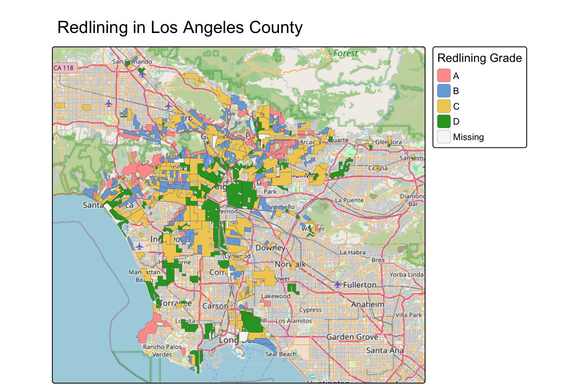
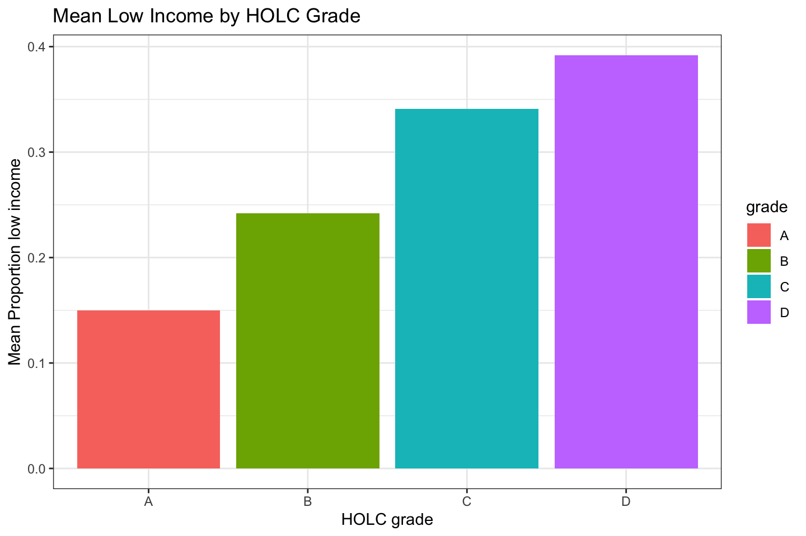
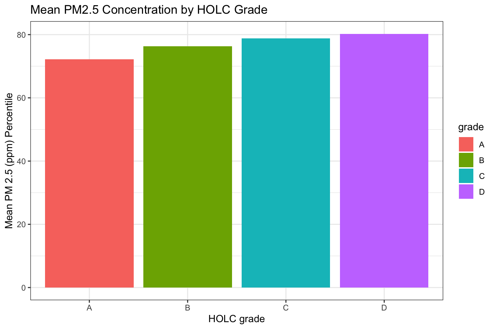
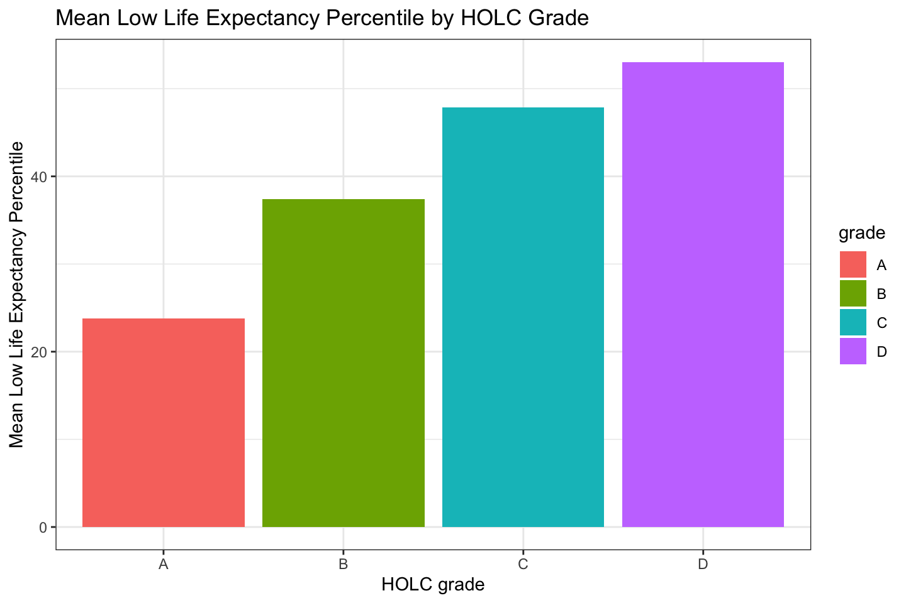
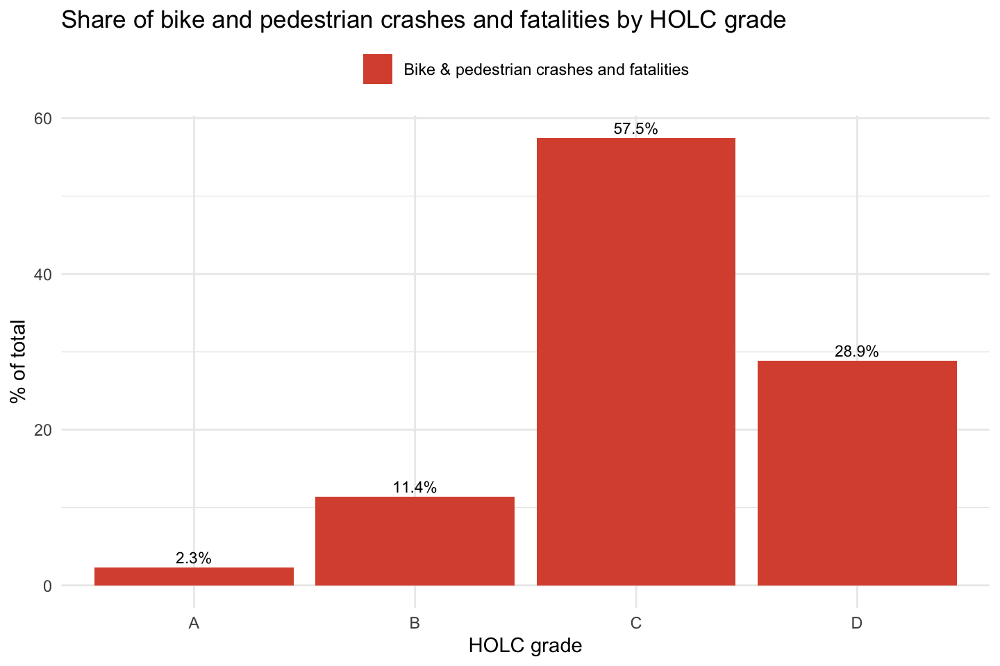

library(sf)
library(tmap)
library(tidyverse)
library(spData)Comparing Environmental Justice and Collision data across redlining HOLC grades
Load packages and read in the data
# Read in the data
ejscreen <- sf::st_read(here::here("data",
"ejscreen","EJSCREEN_2023_BG_StatePct_with_AS_CNMI_GU_VI.gdb"))
crashes <- read_csv("data/SWITRS_LA/Crashes.csv")
mapping_inequality <- st_read("data/mapping-inequality/mapping-inequality-los-angeles.json")
mapping_inequality <- st_transform(mapping_inequality, st_crs(ejscreen))
# Filter ejscreen to LA county
LA <- ejscreen %>%
dplyr::filter(CNTY_NAME %in% c("Los Angeles County"))Map Redlining in Los Angeles
# Create bounding box for area with mapping inequality data
la_south <- st_bbox(c(xmin = -118.6, ymin = 33.70, xmax = -117.8, ymax = 34.3),
crs = 4326)
# Plot the data
tm_shape(mapping_inequality, bbox = la_south) +
tm_polygons(fill = "grade",
lwd = 0.2,
fill.legend = tm_legend(title = "Redlining Grade")) +
tm_basemap("OpenStreetMap") +
tm_title("Redlining in Los Angeles County")
Plot % Low Income, PM 2.5 Concentration and Low Life Expectancy Percentile by HOLC Grade
# Join ejscreen data with mapping inequality data
data_joined <- st_join(LA, mapping_inequality)
if (nrow(data_joined) != nrow(mapping_inequality)) {
warning("left join does not match original data. potential data loss during join")
}
# Drop geometries from the data
data_dropped <- st_drop_geometry(data_joined)
# Find the percentage of census block tracts in each grade
redlining_grouped <- data_joined |>
count(grade) |>
mutate(pct = n / sum(n) * 100)# Find mean low income percent per grade
low_income <- data_dropped |>
filter(!is.na(grade)) |>
summarize(mean_low_income = mean(LOWINCPCT, na.rm = TRUE), .by = grade)
# Plot mean low income percent
ggplot(low_income, aes(x = grade, y = mean_low_income, fill = grade)) +
geom_col() +
labs(x = "HOLC grade", y = "Mean Proportion low income", title = "Mean Low Income by HOLC Grade") +
theme_bw()
The plot of Mean Low Income by HOLC Grade shows a clear trend of Mean Low Income increasing with each HOLC grade. A has the lowest with approximately 15%, followed by B with 24%, C with 34% and finally D with 39%.
# Find mean PM2.5 concentration per grade
pm25 <- data_dropped |>
filter(!is.na(grade)) |>
summarize(mean_pm25 = mean(P_PM25, na.rm = TRUE), .by = grade)
# Plot mean PM2.5
ggplot(pm25, aes(x = grade, y = mean_pm25, fill = grade)) +
geom_col() +
labs(x = "HOLC grade", y = "Mean PM 2.5 (ppm) Percentile", title = "Mean PM2.5 Concentration by HOLC Grade") +
theme_bw()
The plot of Mean PM 2.5 Comcentration also shows a consistent increase across grades. All regions of LA show a very high percintile of PM 2.5 concentration, but A is the lowest at the 73rd percentile, followed by B at the 76th, C at the 79th, and D at the 80th.
# Find mean low life expectancy per grade
low_life_exp <- data_dropped |>
filter(!is.na(grade)) |>
summarize(mean_low_life_exp = mean(P_LIFEEXPPCT, na.rm = TRUE), .by = grade)
# Plot mean low life expectancy
ggplot(low_life_exp, aes(x = grade, y = mean_low_life_exp, fill = grade)) +
geom_col() +
labs(x = "HOLC grade", y = "Mean Low Life Expectancy Percentile", title = "Mean Low Life Expectancy Percentile by HOLC Grade") +
theme_bw()
The plot of mean Low Life Expectancy Percentile shows a very clear increasing trend across HOLC groups. A is in the 24th percentile, B is in the 37th percentile, C is in the 48th percentile and D is in the 53rd percentile.
Plot bike and pedestrian crashes by HOLC Grade
# Find NA's in Point X and Y
sum(is.na(crashes$POINT_X))[1] 9484sum(is.na(crashes$POINT_Y))[1] 9484# Find NA's in Longitude and Latitude
sum(is.na(crashes$LATITUDE))[1] 97350sum(is.na(crashes$LONGITUDE))[1] 97350# Filter out NA's in Point X and Y columns, and select for bicycle and pedestrian accidents
crashes2 <- crashes |>
filter(!is.na(POINT_X)) |>
filter(!is.na(POINT_Y)) |>
filter(BICYCLE_ACCIDENT == "Y" | PEDESTRIAN_ACCIDENT == "Y")
# Add geometry to crash data using Point X and Y
crashes_transform <- st_as_sf(crashes2, coords = c("POINT_X", "POINT_Y"), crs = 4326)
# Check if CRS's match
if(st_crs(crashes_transform) != st_crs(mapping_inequality)){
warning("coordinate refrence systems do not match")
crashes_crs_new <- st_transform(crashes_transform, crs = st_crs(mapping_inequality))
}
# Join crash data with mapping inequality data
crash_inequality <- st_join(crashes_crs_new, mapping_inequality, join = st_within)
# Find bike and pedestrian crashes by grade and plot
crash_share <- crash_inequality |>
st_drop_geometry() |>
filter(!is.na(grade)) |>
summarize(
crashes = n(),
.by = grade
) |>
mutate(
`Bike & pedestrian crashes and fatalities` = crashes / sum(crashes) * 100,
) |>
pivot_longer(c(`Bike & pedestrian crashes and fatalities`),
names_to = "measure", values_to = "pct")
ggplot(crash_share, aes(x = grade, y = pct, fill = measure)) +
geom_col(position = "dodge") +
geom_text(aes(label = paste0(round(pct, 1), "%")),
position = position_dodge(width = 0.9), vjust = -0.4, size = 3) +
scale_fill_manual(values = c("#d9533c")) +
labs(x = "HOLC grade", y = "% of total", fill = NULL,
title = "Share of bike and pedestrian crashes and fatalities by HOLC grade") +
theme_minimal() +
theme(legend.position = "top")
This plot clearly shows that A and B areas have more
Interpretation and Analysis
It is clear that historical redlining still has major effects today.